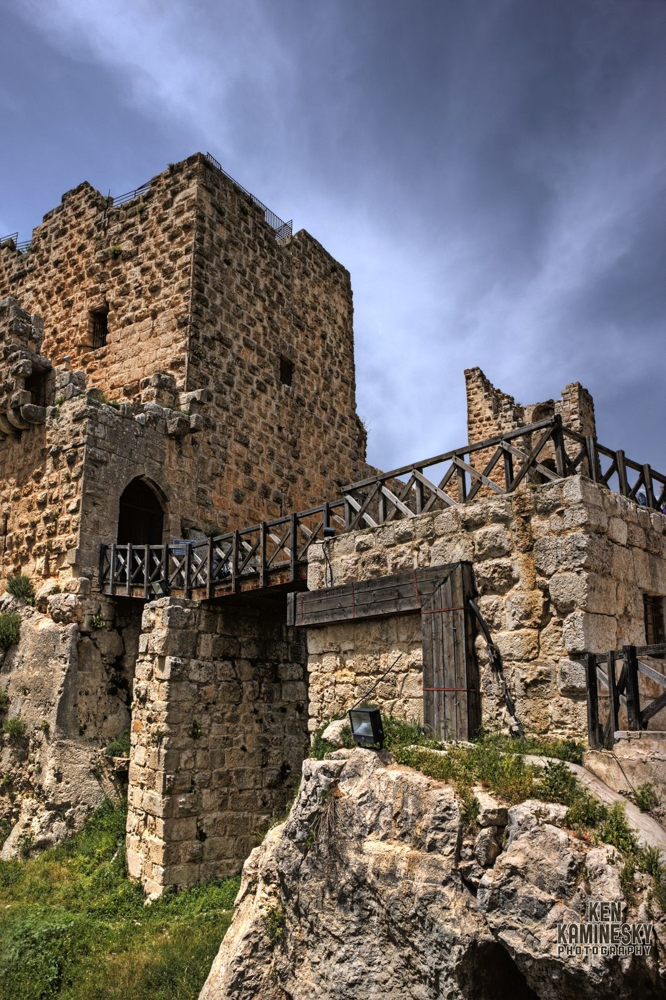

Private Day Trip: Amman to Umm Qais, Ajloun Castle & Jerash

Overview
A private day tour from Amman to Umm Qais, Ajloun Castle and Jerash. Start with pickup from your hotel in Amman and travel in an air-conditioned car or van. Visit the ancient city of Umm Qais, a rich and prosperous Greek and Roman settlement, then continue to Ajloun Castle.
Ajloun Castle is a 12th-century fortress built by Saladin of the Ayyubid dynasty, with towers, chambers, galleries and staircases, and beautiful scenery over the surrounding hills. Then drive to Jerash to wander down the Colonnaded Street and discover a well-preserved Roman amphitheater, the Temple of Artemis, the Forum, Oval Plaza and Hadrian's Arch. After the visits, you'll be driven back to the same pickup point in Amman.
- Confirmation at time of booking
- Most travelers can participate
- Private tour: only your group
Itinerary
Day 1
Amman - Umm Qais - Ajloun - Jerash - Amman
- You'll get picked up
- AmmanStop: 2 hours
- Umm QaisStop: 60 minutes
- Ajloun Castle (Qala'at ar-Rabad)Stop: 60 minutes - Admission excluded
- AjlounStop: 30 minutes
- Jerash RuinsStop: 2 hours - Admission excluded
- JerashStop: 60 minutes
- You'll return to the starting point
Cost Info
What is and isn't covered in the price.
Price includes
- Hotel pick-up and drop-off
- Private transportation
- Air-conditioned vehicle
- WiFi on board
- Bottled water
- Entrance fees, local guide and lunch (if chosen and booked)
Price excludes
- Driver tips (highly recommended)
- Admission tickets
- Travel insurance
- Entry/Admission - Umm Qais (Jadara)
- Entry/Admission - Ajloun Castle (Qala'at ar-Rabad)
- Entry/Admission - Jerash Ruins